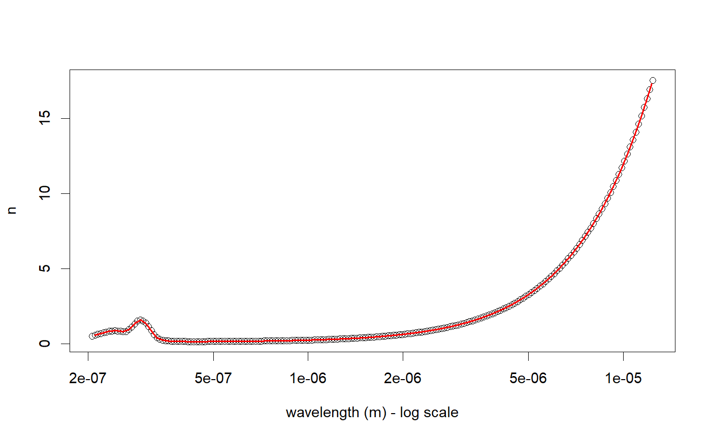

Interpolated Refractive Function
rindex.function(pageid)
| pageid | The material pageid from rindex.search |
|---|
A function that will return the complex refractive index(s), given the wavelength(s) in meters
rindex.search("Ag")#> pageid shelf book page hasrefractive hasextinction #> 1 0 main Ag Rakic 1 1 #> 2 1 main Ag McPeak 1 1 #> 3 2 main Ag Stahrenberg 1 1 #> 4 3 main Ag Babar 1 1 #> 5 4 main Ag Hagemann 1 1 #> 6 5 main Ag Johnson 1 1 #> 7 6 main Ag Windt 1 1 #> 8 351 main AgGaS2 Boyd-o 1 0 #> 9 352 main AgGaS2 Boyd-e 1 0 #> 10 391 main AgGaSe2 Boyd-o 1 0 #> 11 392 main AgGaSe2 Boyd-e 1 0 #> 12 1537 other Au-Ag Rioux-Au100Ag0 1 1 #> 13 1538 other Au-Ag Rioux-Au90Ag10 1 1 #> 14 1539 other Au-Ag Rioux-Au80Ag20 1 1 #> 15 1540 other Au-Ag Rioux-Au70Ag30 1 1 #> 16 1541 other Au-Ag Rioux-Au60Ag40 1 1 #> 17 1542 other Au-Ag Rioux-Au50Ag50 1 1 #> 18 1543 other Au-Ag Rioux-Au40Ag60 1 1 #> 19 1544 other Au-Ag Rioux-Au30Ag70 1 1 #> 20 1545 other Au-Ag Rioux-Au20Ag80 1 1 #> 21 1546 other Au-Ag Rioux-Au10Ag90 1 1 #> 22 1547 other Au-Ag Rioux-Au0Ag100 1 1 #> rangeMin (um) rangeMax (um) points #> 1 0.20660000 12.40000 200 #> 2 0.30000000 1.70000 141 #> 3 0.12782000 0.49594 361 #> 4 0.20660000 12.40000 69 #> 5 0.00000248 248.00000 148 #> 6 0.18790000 1.93700 49 #> 7 0.00236000 0.12157 36 #> 8 0.49000000 12.00000 100 #> 9 0.49000000 12.00000 100 #> 10 0.72500000 13.50000 100 #> 11 0.72500000 13.50000 100 #> 12 0.27000000 1.20000 931 #> 13 0.27000000 1.20000 931 #> 14 0.27000000 1.20000 931 #> 15 0.27000000 1.20000 931 #> 16 0.27000000 1.20000 931 #> 17 0.27000000 1.20000 931 #> 18 0.27000000 1.20000 931 #> 19 0.27000000 1.20000 931 #> 20 0.27000000 1.20000 931 #> 21 0.27000000 1.20000 931 #> 22 0.27000000 1.20000 931#>#>Ag <- rindex.function(0)#>#>wavelengths <- seq(210,12300,, 1000) * 1e-9 plot(Ag_data$wavelength, Ag_data$n, log="x", xlab = "wavelength (m) - log scale", ylab = "n")lines(wavelengths, Re(Ag(wavelengths)), col = 2, lwd = 2)